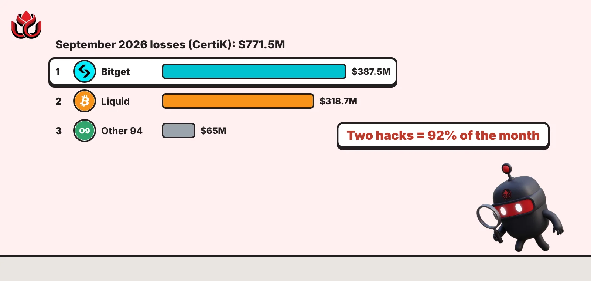
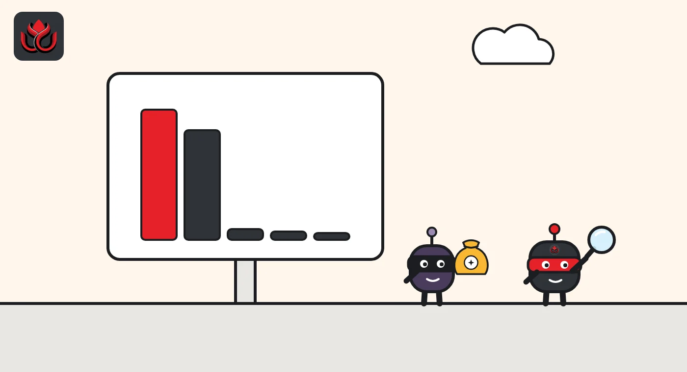
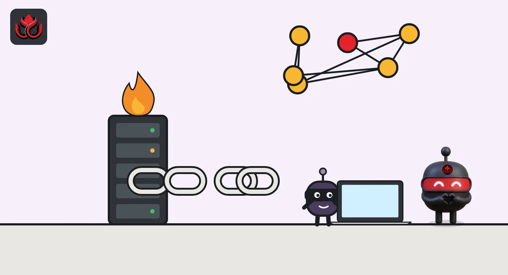

$771 million stolen in September, and two hacks were 92% of it
September 2026 was the worst month of the year for crypto hacks until October, CertiK's data show. Bitget and the Liquid Network caused almost all of it, and a returned bitcoin haul cut the real loss to about $488 million.

Key points
- CertiK counted $771.5 million lost across 96 crypto incidents in September 2026, the worst month of the year until October.
- Two cases made up about 92%: Bitget ($387.5 million) and the Liquid Network ($318.7 million).
- The Liquid attacker sent back 3,400 BTC, so CertiK's adjusted loss for the month is $488.2 million.
 What DeepSea's data shows
What DeepSea's data shows
DeepSea's hack tracker agrees with CertiK on the biggest case, listing Bitget at $387.50 million. It disagrees on D'CENT: DeepSea values the app wallet drain at $20.00 million across about 6,700 wallets, against CertiK's figure of about $6.0 million.
DeepSea's list is narrower than CertiK's. The Liquid Network, Duelbits and the Safe wallet user loss do not appear on DeepSea's hacks list, so its totals cannot be compared with CertiK's monthly figure.
DeepSea does list one September case this article does not cover: a fake FomoPeek app on Apple's App Store, paired with an iOS kernel exploit, that took funds from iPhone users. The tracker dates it about September 4 and shows $1.03 million sent to exchanges, with no stolen total. DeepSea's own figures on the case conflict: its weekly reports say it was flagged on October 4 and show far larger exchange deposits. We treat all FomoPeek figures as unverified.
Data: DeepSea (desea.io), checked November 1, 2026, 11:07 p.m. ET.
How big September was
Crypto hacks, exploits and scams cost $771.5 million across 96 incidents in September 2026, according to security firm CertiK's public security dashboard. Two of them, at the Bitget exchange and the Liquid Network, made up about 92% of the total.
That was the highest monthly total of 2026 at the time. On CertiK's monthly series, the next-biggest month before September was April, at $653.2 million, followed by January at $411.1 million. The record did not last long. October's total, driven by the Binance breach, came to about $6.5 billion.
CertiK also publishes an adjusted figure, which subtracts money that was frozen or returned. For September, $283.3 million fell into that category, leaving adjusted losses of $488.2 million. On that adjusted basis, April ($639.7 million) was still the worse month, so the ranking depends on which measure you use.
Two hacks, most of the bill
The other 94 incidents averaged under $1 million each. The two big ones explain almost everything.
Bitget, September 24. Unauthorized transfers drained the exchange's hot and warm wallets of about $388 million, Bitget says. The company says attackers used a zero-day flaw in a third-party security product to steal staff credentials, then wrote forged withdrawal commands into its wallet system. Bitget says cold wallets and private keys were not compromised, and its Protection Fund covers the loss. CertiK lists the incident at $387.5 million, or 50.2% of the month.
Liquid Network, September 6. Liquid is a Bitcoin sidechain run by a federation of 15 operators. At 9:53 a.m. ET, an attacker exploited a bug in the rangeproof verification cache of Elements, the software Liquid runs on, Blockstream said in its incident assessment. A single transaction created about 4,000 L-BTC with no bitcoin behind it. The attacker then moved those tokens through Liquid's normal peg-out process and withdrew about 4,000 real bitcoin. Liquid's reserve fell from about 4,205 BTC to 197 BTC. CertiK values the incident at $318.7 million.

Why the real loss was $488 million
The two big cases ended very differently. In the Liquid case, the attacker identified themselves on-chain within hours. After several rounds of negotiation, they returned 3,400 BTC on September 7 at 12:09 p.m. ET, Blockstream says. About 602 BTC remained outstanding when Blockstream published its report on September 23.
Blockstream says it halted Liquid's bridge nodes shortly after the attack, shipped an emergency patch within hours and released a fully reviewed fix, Elements v23.3.4, within days. It says the flawed cache design dated back to a 2018 code change. Other assets issued on Liquid, such as USDt, were not affected, although they could not be moved while the network was paused.
That return explains most of the gap between CertiK's total and adjusted numbers. When an attacker sends back 3,400 BTC, the headline theft stays on the books, but the real loss shrinks sharply.
For Bitget, recovery has been slower. The exchange publishes the attacker addresses and offers a 5% bounty for help that leads to a freeze or recovery, but it has not published a frozen total.
The other 94 incidents
Behind the two giants sat a row of much smaller cases. CertiK's top 10 for September includes:
- Safe wallet users (rsETH), about $7.8 million.
- D'CENT App Wallet, a mobile software wallet, about $6.0 million.
- Duelbits, a crypto casino, about $6.0 million.
- Drop (Neutron / Astroport), about $4.4 million.
- NEAR Intents Omni, about $3.9 million, and Nostra Finance, about $3.5 million.
No incident outside the top two came close to $10 million. The other 94 incidents together added up to about $65 million.

How the money was taken
CertiK's breakdown shows that code and system exploits, not phishing, drove the month. Exploits caused $738 million of losses, or 95.7% of the total, and were also the most common type, with 62 of the 96 incidents. Phishing was the second most common type, with 14 incidents, but it cost only about $6.2 million.
September 2026 losses by attack type (CertiK)
US$ million
Source: CertiK Security Dashboard, September 2026 data as shown on November 2, 2026
The third quarter overall
For the third quarter as a whole, CertiK records $1.28 billion in total losses across 255 incidents, up 55.7% from $822.3 million and 222 incidents in the second quarter. September alone made up about 60% of the quarter's losses.
CertiK's dashboard is updated as new information arrives, so figures can shift after first publication. We use CertiK's dashboard as shown on November 2, 2026.
LC Insight analysis
This section is our reading of the facts above, not a statement of fact.
- September shows how concentrated crypto losses have become. One exchange and one sidechain made up more than nine-tenths of the month, so a single breach moves the yearly numbers more than dozens of small ones.
- Neither big incident was a classic stolen-key hack. One was a software validation bug, the other a compromised vendor tool. We expect security budgets to shift toward internal systems and vendor risk, not just key storage.
- Treat monthly totals with care. Whether September ranks as the worst month depends on whether returned funds count, and dashboards revise numbers as cases develop.
What's next
- Bitget's formal security report and any frozen totals
- Recovery of the roughly 602 BTC still outstanding from Liquid
- Revisions to CertiK's September and October figures
Disclaimer. This article is based on public information and the sources listed below as of the update time shown. It is for information only and is not investment, legal or tax advice. Figures may change as companies and authorities publish new data.